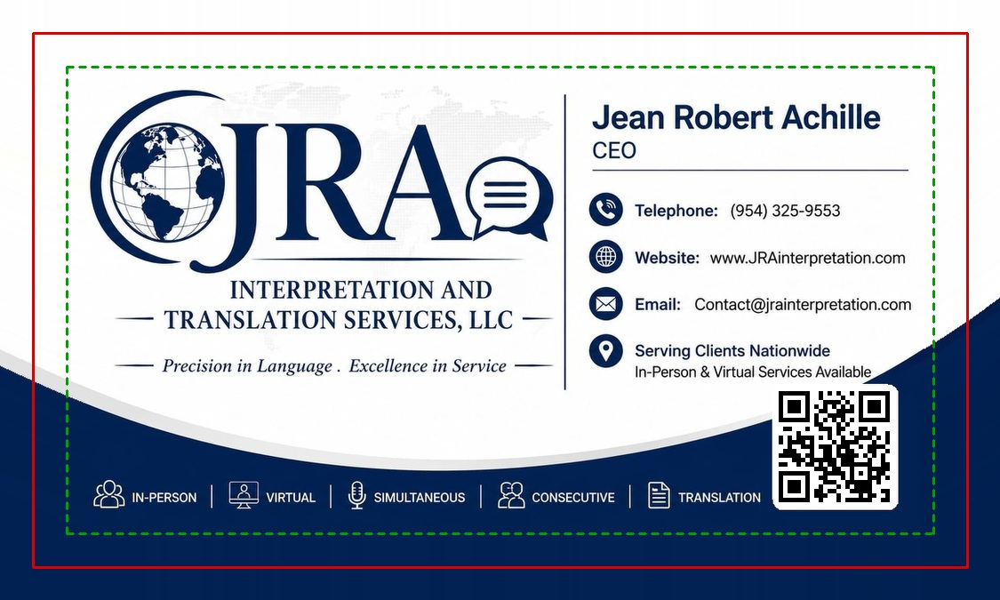

Business card — front — print files
3.75 × 2.25 inches at 300 dpi. That is the finished 3.5 × 2 inch card plus 0.125 inch of bleed on every side. Upload it and let it fill the whole canvas — do not shrink it and do not drag it around.
Download the print file (PDF) Download it as a JPG insteadThe JPG file sent before was the right shape and the right number of pixels, but it had no resolution tag inside it. A JPEG with no resolution tag has no physical size, so an uploader has to guess one — and most guess 72 dpi, which makes this file look like it is 15.6 inches wide. The tool then rescales it to fit the card, and once it rescales, the clearance inside the dotted line is gone and the artwork lands back over the line. The same file, uploaded twice, can behave differently for exactly this reason.
The file above now states 300 dpi = 3.75 × 2.25 inches. The picture itself is byte for byte identical to the one you already have — nothing was redrawn, only the size label was added. The PDF never had this problem, which is why it is the one to use.
The dotted “safe area” box on a 3.75 × 2.25 file is 3.25 × 1.75 inches — a quarter inch in from the edge of the file. In the last version the logo came within 0.272 inch of that edge, so it was inside the box, but only by about half a millimetre. On screen that looks like it is touching the line.
The whole design has been pulled in by 3.5 per cent. The closest thing to the edge is now 0.333 inch, so every element sits a clear 2.1 mm inside the dotted line on all four sides. Nothing was retyped and nothing was moved relative to anything else — it is the same card, slightly smaller inside the same paper.

Point a phone camera at this. It should offer to open jrainterpretation.com. This is the same code that is on the card.
On the card the code is about 10 mm across, which is right for a printed card held in the hand. If you open the card picture in a chat and try to scan it from the screen, the squares end up only a few pixels wide and no camera can read them. That is not a fault in the code — scan the big one above, or scan the card after it is printed.
Some tools ask for the finished size instead. Only use this one if it specifically asks for 3.5 × 2 inches.
Download the no-bleed versionIf a 3.5 × 2 file is dropped into a template that wants 3.75 × 2.25, the tool stretches it to fill, which pushes everything outwards by about 7 per cent and drags the text back over the safe line. That on its own is enough to make a card that fits look like it does not.
The same card with the guides drawn on. Never send this one to print.
Open the guides version{kind=link}
{kind=link}
{kind=link}